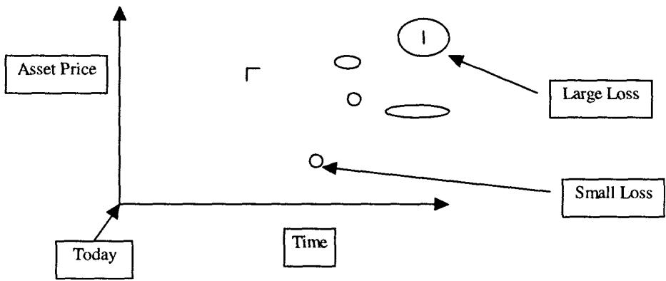

第14章：分桶与地形图（Bucketing and Topography）
Never hire a very well dressed option trader. —— T.G.
导读：本章要解决的问题
前面几章把单只期权的希腊字母和它们的动态行为讲透了。本章换一个视角：你面对的往往不再是单张合约，而是一整本 book（成百上千笔到期、行权价各异、还掺着障碍和二元期权的组合），怎么把它的风险看清楚。Taleb 开宗明义，这一章讲的是机构常用的风险管理方法，与第 9 章讲 vega 的分析衔接，并且把它列为"懂期权、却从未审视过一整本 book 的人"的必读。
把全章压缩成几条主线：
- 分桶（bucketing）是把风险沿某个参数按时间区间切片，于是得到 delta 桶、vega 桶、gamma 桶。它是静态方法：假设市场不动，不显示凸性，也看不到组合对标的的高阶矩。
- 直分桶（straight bucketing）只适用于到期已知、且即刻起算的产品，即欧式香草期权。一旦遇到美式、路径依赖、障碍、递延执行、变量 bet，敞口会在桶之间游移，直分桶会严重误导。
- 解决游移问题的是 forward-forward 桶（远期桶）：把敞口按"从某时刻到另一时刻"的区间来切，并用只扰动单个桶波动率的模拟（局部 vega）来填格。
- 地形图（topography）把风险铺在"时间 × 标的价格"的二维地图上，让交易员超越希腊字母、回到"我在交易我的头寸"而非"我在交易我的希腊字母"。它分两种：行权价（静态）地形图和 gamma（动态）地形图。
- 路径依赖期权连地形图都难画，因为终点相同不代表路径相同，障碍和回望的敞口取决于走过的路。障碍支付地形图（payoff topography）专门用来标出那些平时不显形、却能在 pin 上吞掉巨款的"负区"。
贯穿全章的母题是：把一本 book 的风险压缩成几个希腊字母总数，会丢掉它在时间和空间上的分布信息，而风险恰恰藏在分布里。 笔记沿原文 STATIC STRAIGHT BUCKETING → FORWARD-FORWARD BUCKET → TOPOGRAPHY（静态/动态/障碍支付）的顺序展开，并在每处把交易员的做法接回它对应的数学结构。
一、静态直分桶：把风险沿时间切片
分桶（bucketing）指的是把头寸的风险相对于某个特定参数、按时间区间拆开。操作者由此得到 delta 桶、vega 桶、gamma 桶等等。Taleb 强调它是一种静态风险管理方法，因为它假设市场是常数。它有几个先天的盲区：真正的凸性显示不出来；vega 和 rho 在某些工具组合里会随资产水平变化，或随参数本身变化而增减，而这种效应对复合、障碍和其他奇异期权尤其"凶猛"（beastly）。可以提前看出，分桶不会显示组合对资产价格敏感度的高阶矩。
直分桶（straight bucketing）是一个简单方法，显示从现金到到期时刻 之间的敞口。它只适用于到期已知、确定、且即刻起算的产品。这个限定很关键，下一节会看到它被打破时分桶如何失效。
一个欧式期权的分桶算例：GBP-USD 6 个月 call
Taleb 用一个英镑兑美元的货币头寸演示。现货 1.6050，交易员买入一个 6 个月（183 天）的 call，名义 GBP 1 亿，价格 4.578%，付出 4,578,000 美元，对冲为 50 个 delta。参数：183 天美元利率 5.8438%（360 天基准），英镑利率 6.915%（360 天基准）。远期由下式给出：
这就是覆盖利率平价：远期等于现货乘以两国货币市场计息因子之比。表 14.1 显示了 delta、gamma、vega、Rho1、Rho2（全部以美元计、未加权）。之所以叫"直"分桶，是因为 6 个月里的敞口对应一个从时刻 0 开始、到 6 个月结束的敞口，整段连续地挂在 6m 那一列。
| (000) | All | 1w | 1m | 2m | 3m | 6m | 9m | 1y | 2y | 5y+ |
|---|---|---|---|---|---|---|---|---|---|---|
| Delta | (79850) | (82656) | ||||||||
| Gamma | 8355 | 8355 | ||||||||
| Vega | 438 | 438 | ||||||||
| Rho1 | 385 | 385 | ||||||||
| Rho2 | (408) | (408) |
各行的实务解读与 spot delta / forward delta 之别
表里的 delta 是远期 delta 的现值。这一点呼应第 1 章那条"用 forward delta 而非 cash delta"的规则：6m 桶里 82656 是远期口径，换算成现货 delta 要除以美元计息因子：
gamma 是 GBP 8,355,000，含义是市场上涨 1% 头寸增值这么多、下跌则等额减值。Taleb 老实地标注这是个近似：上涨时实际不会正好涨这么多，因为有三阶导数（speed），而此刻期权平值、正处于 gamma 最大处。vega 直截了当：波动率上升 1 个百分点，赚 438,000 美元。
rho 一行最值得拆。Rho2（外币）对应期权对外币（英镑）利率变动 100 基点的敏感度，算法是 delta 乘以利率、按 183 天插值：
再用美元利率取现值得到 408,000（假设无凸性）。Rho1（本币）是同一个数，减去权利金融资的敞口。权利金 4.57M，美元利率上升会增加每日权利金融资成本：
于是净 Rho1 大致是 。这解释了为什么货币期权要拆成两个 rho：一个对外币利率（经由远期/delta），一个对本币利率（经由远期再叠加权利金贴现的反向效应），两者并不对称。
Taleb 还补了一句凸性的方向：凸性会降低"外币利率上升带来的负 P/L"、放大"外币利率下降带来的正 P/L"，本币利率方向相反。这就是 rho 本身也带二阶项的提醒，而静态分桶恰恰把这一层抹掉了。
理论映射：分桶是把价值微分按期限做的线性分解
把分桶形式化，它就是把组合价值的全微分按到期分段、并只保留一阶系数：
其中 标记到期桶。直分桶把每笔期权的全部敏感度整段挂在它名义到期对应的那个 上。它的静态性体现在：各 、 被当成常数，桶与桶之间不耦合，对 的扰动假设只影响本桶。这套近似对欧式期权基本成立（敞口不会跨桶），却对路径依赖工具失效，因为后者的"有效到期"本身是随机的，无法被钉在一个固定的 上。
二、美式与路径依赖期权：敞口会在桶之间游移
Taleb 指出，分桶对欧式期权总体上更好用，因为它的桶只是部分不稳定：桶里的量会随期权移入/移出价内而增减（gamma 或 vega 的得失），但某一只期权的敞口不会换桶。这是直分桶成立的隐含前提。
美式和路径依赖期权打破了它，因为敞口的确切久期不确定。一个敲出（knock-out）概率上升的障碍期权，它的 vega、gamma 和各希腊字母会向短期桶移动（因为它更可能早早出局）。反过来，当市场远离 strike 时，美式和路径依赖期权开始像欧式期权，敞口移向名义到期附近。
波动率的移动也起同样作用。更高的波动率缩短敲出障碍期权的久期（更容易被敲掉），却矛盾地拉长美式期权的久期。这个反向效应值得记住：同样是波动率上升，对障碍是"催命"，对美式是"续命"（持有人更愿意付 carry 把期权延长一天去赌，呼应第 1 章美式的 extendible option 性质）。
更棘手的是几类结构。敲入（knock-in）和递延执行（deferred strike）期权根本塞不进直桶，因为它们的敞口"从一个点开始、在另一个点结束"，因而依赖一个 forward-forward 桶；它们更依赖某些时间段里发生的事件，而非另一些时间段。最糟的是，有些结构（比如障碍）本质是伪装的日历价差（calendar spreads in disguise）。交易员若只看直分桶系统披露的净桶敞口，会被严重误导。
看清这些工具风险的唯一办法是做动态分桶（dynamic bucketing）：要求交易员在标的的不同状态、不同波动率下逐一审视头寸，并据此匹配风险。
理论映射：随机久期与"伪装日历价差"
把这一节接回理论，核心是"有效到期是随机变量"。欧式期权的到期是确定的 ；障碍/美式期权的有效终止时刻是一个停时 （首次触及障碍、或最优行权时点），它依赖路径、波动率、利率。分桶要求把敞口挂到一个确定的时间格上，而 的分布随市场状态漂移，于是敞口在桶间游移。波动率升高让敲出停时 的期望前移（久期缩短），让美式行权停时后移（久期拉长），正是 对参数的比较静态。
"障碍是伪装的日历价差"也能讲清楚：一个 reverse knock-out 在障碍未触及时像长期期权、触及后归零，等价于"做多一段时间的 optionality、做空另一段"，净敞口在某个到期为正、另一个为负。直桶把它压成一个净数，掩盖了它在时间轴上一正一负的结构，这正是日历价差的特征。把它当成单一到期的净敞口去对冲，会在曲线移动时暴露。
三、进阶：forward-forward 桶（远期桶）
Taleb 坦言这套系统因计算复杂极少被实现，但对路径依赖期权、敲入这类产品、以及非时间齐次（non-time-homogeneous）结构（如变量 bet）来说，看到 forward-forward 期权风险是必需的。他说构建这样一个分桶系统曾长期困扰他，直到数值技术最近的进展。
forward-forward 桶不再按"从 0 到 "切，而是按"从 到 "的相邻区间切。示意如下：
| (000) | 0-1w | 1w-1m | 1m-2m | 2m-3m | 3m-6m |
|---|---|---|---|---|---|
| Delta | 82 | 82 | 82 | 82 | 82 |
| Gamma | 8 | 8 | 8 | 8 | 8 |
| Vega | .4 | .4 | .4 | .4 | .4 |
| Rho1 | .4 | .4 | .4 | .4 | .4 |
| Rho2 | (.4) | (.4) | (.4) | (.4) | (.4) |
当组合含路径依赖期权时，计算机填格的方法相当复杂。由于没有解析方法，它必须以"保持影响其他部分的参数不变"的方式去移动这些格子。具体做法是把敞口拆进不同的波动率时段，对整个头寸跑下面的模拟：
- 只为某一个桶抬高波动率，其他桶不动。 用二叉树在该时段的节点之间跑新的更高波动率、其他时段维持常数。由此产生的价格差就是那个桶的 vega（局部 vega）。
- 如果组合只含欧式期权，可以假设波动率不依赖于冲击的位置，而只取决于对整个组合的总体效应；于是每个桶分享相等份额的总 gamma。
- 对非欧式工具，vega 和 gamma 是桶依赖的。
Taleb 注明这套方法在第 9 章有详尽回顾。
理论映射：forward-forward 桶就是前向波动率的 vega
这一节的数学身份是前向方差/前向波动率的敏感度。把累计方差按时间分段：
其中 是第 段的前向波动率。直分桶的 vega 是对整条曲线平移的敏感度 ；forward-forward 桶的 vega 则是对单个时段前向波动率的敏感度 ，即"只在 内抬高瞬时波动率、其余不变"产生的价值变化。这正是 Taleb 描述的"只为一个桶抬高波动率、用二叉树在该段节点间跑"的离散实现。
为什么对路径依赖期权必须这么做？因为这类期权对"波动率发生在哪一段"敏感，而不只对总量敏感。一个 3 个月敲出期权，前 2 周的高波动率（增加早期敲出概率）和最后 2 周的高波动率，对它的价值影响完全不同方向。直桶只给一个总 vega，掩盖了这种时间定位；forward-forward 桶把 vega 沿时间铺开，才看得见。这也是为什么 Taleb 说欧式期权可以"每个桶分享相等的总 gamma"（时间齐次，位置无关），而非欧式工具的 vega/gamma 必须逐桶算（位置相关）。
四、地形图：把风险铺在"时间 × 价格"的二维地图上
头寸地形图（position topography）是一种风险管理方法，它把组合的敞口分布展示在时间和可能的资产价格构成的平面上。Taleb 把它分成两类：行权价（静态）地形图和 gamma（动态）地形图。地形图的最大好处是超越希腊字母（transcending the Greeks）：它让交易员看见风险的分布，而不只是几个汇总数字。
行权价地形图（静态地形图）
静态地形图是头寸的一张二维地图，横向按到期、纵向按行权价展示面值（face value）敞口的分布。
Taleb 讲了一段历史。当期权交易还处在原始阶段、交易员只处理一两个到期时，他们用清算所免费发的卡片记录敞口，好快速看清库存里有什么。下面是这样一张卡片的样本（Old Days Strike Topography）：
| Strike | March P | March C | June P | June C |
|---|---|---|---|---|
| 65 | 26 | |||
| 70 | -20 | |||
| 75 | -20 | |||
| 80 | 21 | |||
| 85 | 5 | 1 | ||
| 90 | 11 | 2 | ||
| 95 | -5 | -19 | 11 | -2 |
| 100 | -72 | -71 | ||
| 105 | 2 | 70 | ||
| 110 | 1 | 23 | 11 | |
| 115 | -9 |
凭这张卡片，交易员可以越过 delta 和 gamma，去交易他的头寸，而不是交易他的希腊字母。Taleb 认为这种方法有令人钦佩的教学价值：它逼着交易员学会期权交易的精微之处，而不必求助于希腊字母报告那类"伪数学"方法。它让交易员的担忧从抽象的"我不喜欢自己空了 22.23 个 gamma 和 71 个加权 vega"，变成精确的"我空了太多 105 call，需要认真的保护"。这句对比是全章的态度宣言：希腊字母是汇总，地形图是结构，而风险住在结构里。
但现代 book runner 没这种奢侈。既没有固定到期也没有固定行权价，那张卡片要几千行几千列才装得下一本大型场外组合的地形，而且它装不下香草以外的任何结构。于是场外 book 需要一种设计，把敞口在时间和空间的点上打包，检视集中度风险。场外行权价地形图按"二维桶"的净面值敞口来显示：横向（行权价方向）取网格中点之间的净面值，纵向（时间段）取点之间的净面值。所以 1W/100 这个桶，显示的是"2 天到 1 周之间、且行权价在 99 到 101 之间"的所有交易的净额。
| Spot | 80- | 85 | 90 | 93 | 96 | 98 | 100 | 102 | 104 | 107 | 110 | 115 | 120+ |
|---|---|---|---|---|---|---|---|---|---|---|---|---|---|
| 1d | -83 | 86 | -12 | -33 | -41 | -10 | -9 | 90 | 97 | 16 | -49 | 56 | 15 |
| 2d | 47 | 9 | 18 | 68 | -15 | -73 | 20 | 54 | 13 | -54 | -67 | -24 | -4 |
| 1w | -33 | 66 | -18 | -25 | 45 | 66 | -35 | 50 | -71 | 18 | 27 | 23 | -58 |
| 2w | -38 | 34 | 12 | 44 | 55 | 54 | -53 | -41 | 47 | 64 | -28 | -9 | 37 |
| 1m | 35 | -17 | -55 | 34 | 3 | 52 | 43 | 7 | -8 | -15 | 30 | -27 | 13 |
| 2m | 12 | 45 | 2 | -25 | 33 | 38 | -20 | 15 | 5 | -21 | 1 | -26 | -34 |
| 3m | -14 | -27 | 21 | 13 | -28 | -5 | 22 | -6 | -35 | 13 | -24 | 39 | 6 |
| 6m | -9 | -11 | 1 | 23 | 20 | -28 | 28 | 6 | -11 | -29 | 29 | -15 | -18 |
| 9m | -2 | -14 | -1 | 8 | -6 | -6 | 0 | -17 | 5 | 1 | 3 | 1 | 3 |
| 1y | 6 | -7 | -6 | 2 | 1 | -3 | -2 | 5 | 9 | 1 | 10 | 9 | 5 |
| 2y | 2 | 5 | -2 | 4 | -1 | 2 | 4 | -1 | -2 | 5 | -2 | -4 | 3 |
| 3y | -4 | 3 | 1 | 0 | -5 | -2 | 0 | -2 | -3 | -5 | 3 | -4 | 5 |
| 5y+ | -1 | 4 | 0 | 1 | -5 | -4 | 0 | 4 | -2 | -4 | -5 | -4 | -2 |
地形图应当刻意排除大多数非香草期权，这些可以在单独的报告里处理。美式期权要小心，因为它们的名义到期并不正好是预期到期，只有软美式工具应该被放进矩阵；更彻底的处理是把美式的名义到期移到它的"omega"（真实到期时间）上。Taleb 提到，地形图方法的一个应用是第 9 章讲的"方块法"（method of squares）。
加入相关工具。 可以把多个相似商品相加（即假设 100% 相关）纳入一张报告。这种做法只为检视行权价集中度或 gamma/vega 的来源，因此可以简化而不至于骗了交易员。比如想在一张地形图里同时看法郎和马克的风险，就把所有 USD-FRF 的行权价折算成 USD-DEM。真正的改进则要来自一张几乎无法实操的三维地图，让相关性的斜率也进来。
缩放行权价地形图：用标准差代替行权价
由于"贴近平值的行权价之差"对短期期权比对远月结构更有意义，必须做缩放。100 和 101 这两个行权价之间的"gap"，对一个 5 年期权微不足道，对一个隔夜结构却很要命。表 14.5 的缩放法用标准差代替行权价来记录这种风险差异。在 15.7 的波动率下，行权价之间 1 个标准差就是 1 个百分点，即 100 到 101 之间。一年的标准差是 （252 个交易日），即 15.7。所以一个隔夜的 1 点 gap，等价于一年的 15.7 点 gap。于是假设现货在 100（无漂移），报告会把"隔夜 101 行权价"和"一年期 115.7 行权价"放进同一列。
| Standard Deviations | -4 | -3 | -2 | -1.5 | -1 | -.5 | 0 | .5 | 1 | 1.5 | 2 | 3 | 4 |
|---|---|---|---|---|---|---|---|---|---|---|---|---|---|
| 1d | 100 | -150 | 50 | ||||||||||
| 2d |
理论映射：缩放就是把行权价换成 moneyness 坐标
缩放地形图的数学身份是按 归一化的对数 moneyness。期权的风险形态本质上由标准化变量
决定，而非由绝对的 决定。两个不同到期的期权，只要它们的 相同，就处在曲面上"风险相似"的位置。把横轴从行权价换成标准差，正是把所有到期投影到同一个 moneyness 坐标系，于是隔夜的 101（1 个标准差）和一年的 115.7（同样 1 个标准差）落在同一列。 的换算就是方差随时间线性累积、波动率随 增长这条基本标度律。这让交易员在比较跨期集中度时，比较的是同等"危险程度"的位置，而非名义价位。
五、动态地形图：局部波动率敞口随时间的稳定性
动态地形图是一种强有力的分析方法，它能揭示一个头寸穿越时间的稳定性。做法是保持头寸不变，向前模拟一天、两天、一周……，并披露由此得到的希腊字母地图。
在头寸快速频繁变动的环境里，动态地形图的需求被放大。一个常规的 gamma 或 vega 矩阵，在风险随时间剧烈变化时会掩盖真实头寸。Taleb 的例子：如果头寸是大量 long 一周期权、short 两周期权，常规头寸报告会掩盖真正的问题——一周之后那一整周的风险。
计算技术。 报告不关心 delta，只关心 gamma。操作者先在不同资产价格水平上跑出今天的 gamma；然后冻结掉次日到期的期权，在所有这些价格水平上跑出"一天之后"的 gamma，依此类推。"把日历向前推一天"意味着把全局头寸当成日历日期已经前进了一天来跑。
需要注意，这套报告对奇异期权表现不好，因为它们的路径依赖让每一份报告都是条件性的。换句话说，一个"100 call、103 敲出"的敞口，取决于前一天市场是否曾穿过 103。由此得到的 gamma 地形图（表 14.6）外观上可能与前面的相似，却是另一种动物，因为它剔除了随时间到期消失的头寸。这套技术还能进一步用相关性改进：操作者需要用市场间相关性随时间可能的变化来跑报告。
缺陷：路径依赖无法从动态地形图中读出
没有已知办法从动态地形图里推出路径依赖期权的敞口。
Taleb 的例子很清楚。交易员想看"一个月后市场到 102 时"book 的 gamma。但只要头寸里有敲出期权，他看到的任何数字都不准。假设有个结构在 104.5 敲出：市场最终停在 102，并不意味着它没有在中途穿过 104.5；若穿过了，gamma 敞口会截然不同。回望期权同理：从高位回落（pulldown）的 gamma，会低于市场正停在极值（最高或最低）时的 gamma。
路径依赖的麻烦在于：可能的路径远多于终点，而没有快速办法把这些路径都纳入可视化。 这是地形图作为"二维快照"的根本局限——它按终点（time × price）组织，而路径依赖期权的状态由整条轨迹决定，二维地图无法编码"怎么走到这里"的信息。
理论映射：终点可测 vs 路径可测
把这条缺陷形式化，关键是支付的可测性。欧式与可分桶工具的价值是终端状态 的函数，因而可以在 平面上画出 gamma 地图，每个格子是良定义的。路径依赖期权的价值依赖整条路径的泛函，比如障碍期权依赖 是否触障、回望期权依赖运行极值 。这类工具的状态变量不止 ，至少要再加一个路径统计量（是否触障、运行极值），它们在 平面上不是单值函数。
换句话说，画 gamma 地形图等于假设 是充分统计量；这对马尔可夫的终值型支付成立，对路径依赖支付不成立。要正确显示障碍期权，地图至少要升一维（加"是否已触障"的指示），回望则要加"运行极值"维。Taleb 说"路径远多于终点"，正是这个维数膨胀：固定终点 对应无数条路径，其中触障与未触障给出完全不同的 gamma。这把第 13 章"二元/障碍期权永不 flat"的判断接上了——它们的风险无法被低维快照捕捉。
六、障碍支付地形图：标出那些不显形的"负区"
障碍支付地形图（barrier payoff topography）是一张地图，标出在一个"pin"上可能损失大笔资金的位置，即一个 bet 期权或 reverse knock-out 的最坏情形（详见第 17 至 20 章）。Taleb 点出这类风险的阴险之处：pin 风险可能极其巨大，却不会提前很久显形；而且 pin 没有真正附着的到期日，这让它的期望停时（expected stopping time）成为波动率、利率等的一个模糊函数。
尽管如此，仍然需要看到最坏情形。好在这个披露被大大简化了，因为一个障碍的最坏情形位于到期时的 strike 上。所以只要建立支付在名义到期处的地图，就足以阻止交易员往一个负的"区"（zone）里继续加仓。

图 14.1 给出这样一张地图：它把潜在的巨额支付损失标在 time × price 平面上，让交易员一眼看出哪些价位-时间区域是"碰不得"的负区。这与前面"风险住在分布里"的母题一脉相承——pin 风险在希腊字母汇总里完全看不见，只有把它铺到支付地形图上才暴露。
理论映射：pin 风险是支付奇点处的模糊停时
把障碍支付地形图接回理论，它处理的是两个叠加的困难。其一，reverse knock-out 和 bet（二元）期权的支付在 strike/barrier 处不连续，delta 与 gamma 在临界点附近发散变号，这就是 pin 风险的来源（第 13 章已讲过支付奇点的不可静态对冲性）。其二，触障是一个停时事件，而 pin 没有固定到期，其"何时结算"取决于路径首次触及障碍的时刻，是一个依赖 、 的随机停时，期望停时因此模糊。
Taleb 给出的简化很实用：最坏情形锁定在"到期时落在 strike 上"。这等价于说，虽然停时分布模糊、路径众多，但损失的上确界出现在一个可计算的点——到期日、strike 处。于是不必模拟全部路径，只画名义到期处的支付地图，就能圈出负区、约束加仓行为。这是一种用最坏情形几何（worst-case geometry）替代全路径模拟的工程折中，与前面 forward-forward 桶"保持其他参数不变、只动一处"的思路同源：在无解析解、路径爆炸的地方，找一个守得住的标量去管住风险。
七、本章综述：理论与实务的对照
| Taleb 的实务命题 | 对应的理论命题 |
|---|---|
| 分桶 = 把风险沿参数按时间切片 | 价值全微分按到期分段的一阶线性分解 |
| 直分桶只适用于即刻起算、到期确定的欧式 | 终端到期 确定，敞口不跨桶 |
| 表中 delta 是远期 delta 的现值 | spot delta = forward delta / 计息因子 |
| 货币期权拆 Rho1/Rho2 且不对称 | 远期对两国利率的双重敏感 + 权利金贴现 |
| 美式/障碍敞口在桶间游移 | 有效到期是随机停时 ，随参数漂移 |
| 高波动率缩短敲出、拉长美式久期 | 前移 vs 行权停时后移 |
| 障碍是"伪装的日历价差" | 触障前后敞口一正一负，跨到期分布 |
| forward-forward 桶 | 前向波动率的 vega |
| 只抬一个桶的波动率跑二叉树 | 局部 vega / 前向方差分段 |
| 缩放地形图用标准差代替行权价 | 按 归一化的 moneyness |
| 隔夜 1 点 = 一年 15.7 点 | ，方差随时间线性累积 |
| 动态地形图剔除到期消失的头寸 | 沿时间前推的条件 gamma 快照 |
| 路径依赖无法从二维地图读出 | 非充分统计量，需加路径统计量维 |
| 障碍最坏情形在到期 strike 上 | 用最坏情形几何替代全路径模拟 |
| pin 没有固定到期、停时模糊 | 触障停时依赖 ，期望停时模糊 |
核心观点
第一，汇总的希腊字母会丢掉分布信息。一本 book 的风险住在它沿时间和价格的分布里。地形图让交易员"交易头寸"而非"交易希腊字母"，这是 Taleb 给风险管理定的基调。
第二，直分桶只对欧式诚实。它假设敞口不跨桶、波动率冲击只影响本桶。一旦遇到美式、障碍、敲入、递延执行，有效到期变成随机停时，敞口在桶间游移，净桶数会骗人。
第三，forward-forward 桶是看清路径依赖的必需品。它把 vega 沿时间铺成前向波动率敏感度，看得见"波动率发生在哪一段"对路径依赖期权的不同影响，而这正是直桶抹掉的维度。
第四，缩放是跨期比较的前提。用标准差而非行权价做横轴，把所有到期投影到同一 moneyness 坐标，比较的才是同等危险程度的位置。
第五，路径依赖是地形图的边界。二维地图按终点组织，而路径依赖期权的状态由整条轨迹决定。障碍支付地形图用"最坏情形锁定在到期 strike"这一简化，圈出平时不显形的负区。
面对一本 book 的操作清单
- 我看的是汇总希腊字母还是分布地形？风险集中在哪个到期、哪个行权价区？
- 这本 book 里有多少是欧式香草、可以直分桶？有多少是美式/障碍/敲入，敞口会游移？
- 表里的 delta 是远期口径还是现货口径？做对冲前折算了吗？
- 货币期权的 Rho1 和 Rho2 分开看了吗？权利金融资的反向效应算进去了吗？
- 哪些结构是"伪装的日历价差"？净桶敞口是否掩盖了时间轴上一正一负的结构？
- 需要 forward-forward 桶吗？波动率发生在哪一段对我的路径依赖头寸是否方向相反？
- 跨期比较集中度时，横轴用的是行权价还是标准差？是否按 缩放了？
- 动态地形图里，一周后那一整周的风险是否被常规快照掩盖了？
- book 里的 reverse knock-out / bet 期权的 pin 负区在哪？我是否在往负区加仓？
一句话收束
本章最该记住的一句：不要用几个希腊字母总数去概括一本 book，要把风险铺到时间和价格的地图上看它的分布；而当工具变成路径依赖时，连地图都要承认自己只画得出终点、画不出走过的路。 风险管理的功夫，正在于知道哪些结构能被静态分桶诚实地表示，哪些必须靠 forward-forward 桶、动态模拟和最坏情形地形图才不至于被净数欺骗。